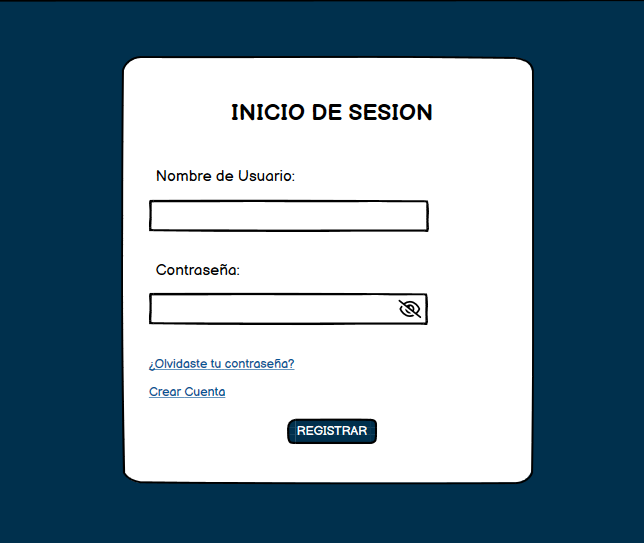

Login
Se representará de modo que el usuario podrá acceder al sistema ingresando credenciales únicas (usuario y contraseña) esto permite el manejo de sesiones para prevenir accesos no autorizados, depende del admin que compruebe los datos y así mismo valide el registro. 